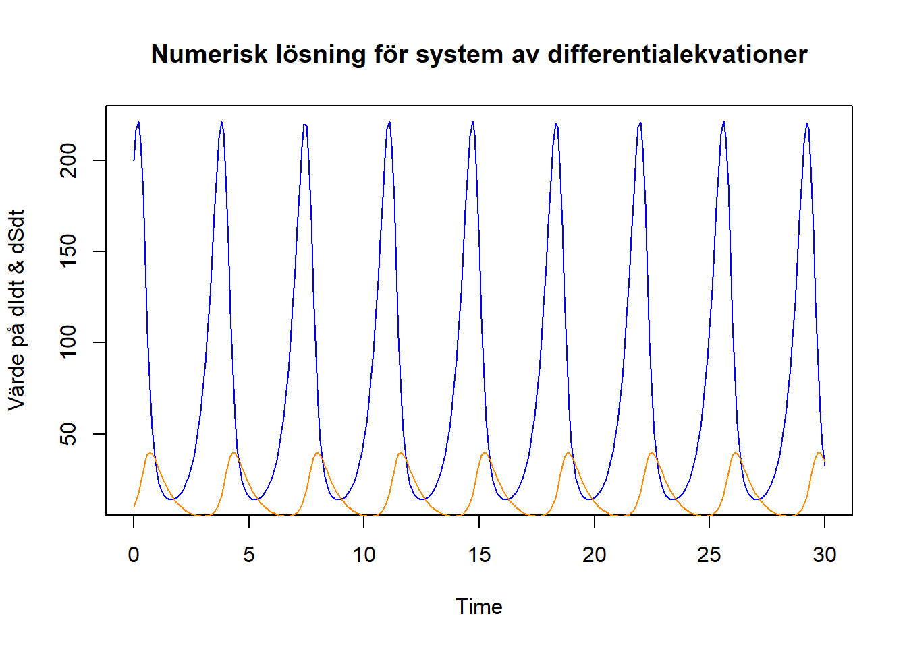
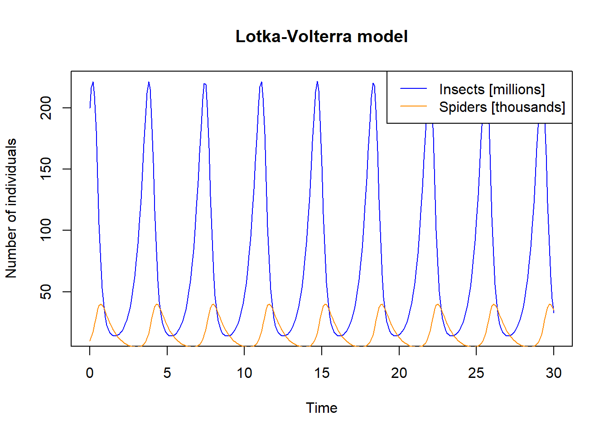
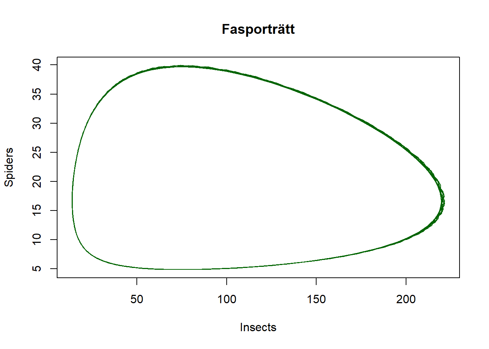

# För att installera paketet som heter palmerpenguins
install.packages("palmerpenguins")
# För Stats
install.packages("MKinfer")
install.packages("lmboot")
install.packages("boot.pval")
# För Matte
install.packages("pracma")
install.packages("expm")
install.packages("deSolve").daddy_code
Allmänt
Lite allmänna funktioner som är bra att kunna.
Paket & inläsning av data
För att installera ett paket.
För att använda funktioner i ett paket måste man ladda in paketet i R genom library()
# Exempel data
library(palmerpenguins)
# Stats
library(MKinfer)
library(lmboot)
library(boot.pval)
# Matte
library(pracma)
library(expm)
library(deSolve)
# KvantBioFör att läsa in data från t.ex. en .csv eller .txt fil. Öppna filen och identifiera vilka symboler som separerar kolumner samt används som decimaltecken.
file.choose() # Returnerar vägen till filen man väljer, hitta fönstret med alt + tab.
my_data <- read.table(
file = file.choose(), # Välj fil interaktivt, alt. filens sökväg som en text string
header = TRUE, # Om det finns namn på kolumnerna
sep = ",", # Här används ett kommatecken för att skilja på kolumner
dec = "." # Här används en punkt som decimaltecken
)För att titta på data kan man använda
# View(penguins) # Öppnar som separat flik
head(penguins, # Printar de första 4 raderna
n = 4)# A tibble: 4 × 8
species island bill_length_mm bill_depth_mm flipper_length_mm body_mass_g
<fct> <fct> <dbl> <dbl> <int> <int>
1 Adelie Torgersen 39.1 18.7 181 3750
2 Adelie Torgersen 39.5 17.4 186 3800
3 Adelie Torgersen 40.3 18 195 3250
4 Adelie Torgersen NA NA NA NA
# ℹ 2 more variables: sex <fct>, year <int>tail(penguins, # Printar de sista 4 raderna
n = 4)# A tibble: 4 × 8
species island bill_length_mm bill_depth_mm flipper_length_mm body_mass_g
<fct> <fct> <dbl> <dbl> <int> <int>
1 Chinstrap Dream 43.5 18.1 202 3400
2 Chinstrap Dream 49.6 18.2 193 3775
3 Chinstrap Dream 50.8 19 210 4100
4 Chinstrap Dream 50.2 18.7 198 3775
# ℹ 2 more variables: sex <fct>, year <int>För att skapa olika datastrukturer
Variabel
var_1 <- "Text/character string" # Någonting inuti "" är text
var_2 <- 25 # Nummer, för decimaltal 25.99
var_3 <- TRUE # Boolean, kan bara vara TRUE (T) eller FALSE (F)
var_4 <- NA # Not Available (NA), inte samma som "NA" (text string)!
var_5 <- NULL # Ingenting, tenderar att radera saker!Vektor
vec_1 <- c() # Skapar en tom vektor
vec_1 <- c(36, 56, 48) # Skapa en vektor med tre värden
vec_1[4] <- 25 # Sätta in ett värde i index plats 4
vec_1 # Printa innehållet av variablen (vektorn)[1] 36 56 48 25vec_1[2] # Printa innehållet i index 2[1] 56vec_1[c(1,3)] # Printa index 1 och 3[1] 36 48Vektorer kan innehålla namn och indexeras med namn
vec_2 <- c(element_1 = 99, element_2 = 100, element_3 = 101)
vec_2["element_4"] <- 102 # Sätt in ett värde med namn
vec_2element_1 element_2 element_3 element_4
99 100 101 102 vec_2["element_2"]element_2
100 vec_2[c("element_1", "element_3")]element_1 element_3
99 101 Data frame
df <- data.frame( # Skapa en dataframe med kolumn_namn = vektor
vec_1, # Kolumn 1, vec_1 från tidigare
letters = LETTERS[1:4] # Kolumn 2, lite bokstäver
)
df vec_1 letters
1 36 A
2 56 B
3 48 C
4 25 DMan kan lägga till kolumner med $
df$col_3 <- vec_2 # Kolumn 3
df vec_1 letters col_3
1 36 A 99
2 56 B 100
3 48 C 101
4 25 D 102Andra sätt att lägga till kolumner är med namn
df["col4"] <- letters[1:4]
df vec_1 letters col_3 col4
1 36 A 99 a
2 56 B 100 b
3 48 C 101 c
4 25 D 102 dEn kolumn kan användas med $
df$letters # Ger en vektor, samma som med df[["letters]][1] "A" "B" "C" "D"Eller med indexering/namn, N.B. enkla [ ] ger ett subset = en mindre del av samma objekt typ
df[3] # Ger en data frame med enbart kolumn 3 col_3
1 99
2 100
3 101
4 102df["col4"] # Ger en data frame med kolumn "col4" col4
1 a
2 b
3 c
4 dmedan dubbla [[ ]] ger objektet inuti
df[[1]] # Ger det "mindre objektet inuti", alltså en vektor i detta fall[1] 36 56 48 25Enkla [ ] kan indexeras med rader och kolumner samtidigt
df[2] # Kolumn 2 (en data frame med en kolumn) letters
1 A
2 B
3 C
4 Ddf[3,2] # Rad 3, kolumn 2 (en vektor av längd ett)[1] "C"df[ ,2] # Alla rader, kolumn 2 (en vektor)[1] "A" "B" "C" "D"df[3, ] # Rad 3, alla kolumner (en data frame med en rad) vec_1 letters col_3 col4
3 48 C 101 cPå tal om subsetting, för att ta ett subset av en data frame kan man filtrera rader baserat på ett kriterium
penguins_chin <- penguins[penguins$species == "Chinstrap", ] # Utan komma läses det som att du vill filtrera kolumner! == är det matematiska lika med (eftersom = är samma som <- )
head(penguins_chin)# A tibble: 6 × 8
species island bill_length_mm bill_depth_mm flipper_length_mm body_mass_g
<fct> <fct> <dbl> <dbl> <int> <int>
1 Chinstrap Dream 46.5 17.9 192 3500
2 Chinstrap Dream 50 19.5 196 3900
3 Chinstrap Dream 51.3 19.2 193 3650
4 Chinstrap Dream 45.4 18.7 188 3525
5 Chinstrap Dream 52.7 19.8 197 3725
6 Chinstrap Dream 45.2 17.8 198 3950
# ℹ 2 more variables: sex <fct>, year <int>penguins_heavy <- penguins[penguins$body_mass_g > 3500, ]
head(penguins_heavy)# A tibble: 6 × 8
species island bill_length_mm bill_depth_mm flipper_length_mm body_mass_g
<fct> <fct> <dbl> <dbl> <int> <int>
1 Adelie Torgersen 39.1 18.7 181 3750
2 Adelie Torgersen 39.5 17.4 186 3800
3 <NA> <NA> NA NA NA NA
4 Adelie Torgersen 39.3 20.6 190 3650
5 Adelie Torgersen 38.9 17.8 181 3625
6 Adelie Torgersen 39.2 19.6 195 4675
# ℹ 2 more variables: sex <fct>, year <int>Man kan även göra detta för att få en kolumn filtrerad/subset baserad på en annan kolumn
penguins_chin_weight <- penguins$body_mass_g[penguins$species == "Chinstrap", ]Error in penguins$body_mass_g[penguins$species == "Chinstrap", ]: incorrect number of dimensionsDet blir en error därför att nu försöker man ta både rader och kolumner (2 dimensioner) på en kolumn (kolumn/vektor har bara 1 dimension) därför att $ ger en vektor. Om vi istället provar utan extra kommatecken för att ange rader & kolumner samtidigt fungerar det (ger en vektor). Alternativt ange kolumnen med namn istället för med $ (ger en mindre data frame).
# Utan extra kommatecken
penguins_chin_weight <- penguins$body_mass_g[penguins$species == "Chinstrap"]
head(penguins_chin_weight)[1] 3500 3900 3650 3525 3725 3950# Ange kolumnen med namn
penguins_chin_weight <- penguins[penguins$species == "Chinstrap", "body_mass_g"]
head(penguins_chin_weight)# A tibble: 6 × 1
body_mass_g
<int>
1 3500
2 3900
3 3650
4 3525
5 3725
6 3950Vi kan även bli av med NA på ett kontrollerat sätt med den här metoden. Om man vill se till att vikt och näbblängd inte har NA kan man använda funtionen in.na() och operatorn !.
is.na(NA) # Kolla om NA är NA[1] TRUE!is.na(NA) # ! negerar ett TRUE/FALSE uttryck[1] FALSEvec_NA <- c(NA, 50)
is.na(vec_NA) # Kolla vilka element som är NA[1] TRUE FALSE!is.na(vec_NA)[1] FALSE TRUE# Alla rader där kolumnen body_mass_g inte är NA och alla kolumner
penguins_no_NA <- penguins[!is.na(penguins$body_mass_g), ]
# Alla rader där kolumnen bill_length_mm inte är NA och alla kolumner
penguins_no_NA <- penguins_no_NA[!is.na(penguins_no_NA$bill_length_mm), ]
data.frame(
rows = c(penguins = nrow(penguins), no_NA = nrow(penguins_no_NA)),
columns = c(penguins = ncol(penguins), no_NA = ncol(penguins_no_NA))
) rows columns
penguins 344 8
no_NA 342 8Matris
Vi kan skapa matriser med rbind() (går även att använda cbind() men då placeras vektorerna vertikalt från det övre vänstra hörnet, istället för horisontellt). Med rbind() blir matrisen som den ser ut när man skriver den.
rbind( # en "character matrix"
c("a", "b"),
c("c", "d")
) [,1] [,2]
[1,] "a" "b"
[2,] "c" "d" cbind( # skillnaden med cbind()
c("a", "b"),
c("c", "d")
) [,1] [,2]
[1,] "a" "c"
[2,] "b" "d" M <- rbind( # Skapar en matris radvis med namngivna rader och kolumner
r1 = c(col1 = 0.90, col2 = 0, col3 = 0, col4 = 0, col5 = 0.45),
r2 = c( 0, 0.45, 0, 0, 0),
r3 = c( 0, 0.23, 0.45, 0, 0),
r4 = c( 0, 0, 0.23, 0.45, 0),
r5 = c( 0, 0, 0, 0.23, 0.20)
)
M col1 col2 col3 col4 col5
r1 0.9 0.00 0.00 0.00 0.45
r2 0.0 0.45 0.00 0.00 0.00
r3 0.0 0.23 0.45 0.00 0.00
r4 0.0 0.00 0.23 0.45 0.00
r5 0.0 0.00 0.00 0.23 0.20För matris matte se Matte sektionen.
Matriser kan indexeras på samma sätt som data frames
M[3, 2][1] 0.23M[3:5, 2:3] col2 col3
r3 0.23 0.45
r4 0.00 0.23
r5 0.00 0.00M[c(3,5), c(2,3)] col2 col3
r3 0.23 0.45
r5 0.00 0.00M[c("r3","r5"), c("col2","col3")] col2 col3
r3 0.23 0.45
r5 0.00 0.00Lista (den riktiga listan)
I en vektor måste alla element vara av samma typ (numerisk/text osv.) och i en data frame måste alla kolumner (som är vektorer) vara lika långa.
Listor kan ha olika typer av objekt i sig och brukar användas för att bunta ihop olika objekt man vill hålla tillsammans. Till exempel är output från t.test() en lista.
my_list <- list() # En tom lista
my_list$df_1 <- df # Lägg till en data frame med $
my_list[[2]] <- var_2 # Lägg till en variabel med index, N.B. [[]]
my_list[["plats_3"]] <- vec_2 # Lägg till en vektor med namn, N.B. [[]]
my_list$df_1
vec_1 letters col_3 col4
1 36 A 99 a
2 56 B 100 b
3 48 C 101 c
4 25 D 102 d
[[2]]
[1] 25
$plats_3
element_1 element_2 element_3 element_4
99 100 101 102 Lite andra funktioner
Ett objekts typ heter “klass” och kan kollas med funktionen class()
class(var_1) # var_1 är text[1] "character"class(var_2) # var_2 är numerisk[1] "numeric"class(var_3) # var_3 är logical (TRUE/FALSE)[1] "logical"class(vec_1) # vec_1 är numerisk vektor[1] "numeric"class(df) # df är en data frame[1] "data.frame"class(M) # M är en matris[1] "matrix" "array" class(my_list) # my_list är en lista[1] "list"För att se till att någonting skrivs i konsollfönstret används print()
print(var_1) # Tar enbart ett objekt! Se paste()[1] "Text/character string"För att skriva ihop text m.m. används paste(), den tar dock enbart enskilda element (inte vektor/data frame/list
message <- paste(
"Hello", "world", var_1, 55, vec_2[3], # Alla objekt man vill skriva ihop
sep = " " # Separator att infoga mellan varje objekt, här ett mellanslag
)
print(message)[1] "Hello world Text/character string 55 101"Notera att print() enbart accepterar ett objekt, därav den vanliga kombinationen print(paste(arg1, arg2)).
print(paste("Nu","klarar","vi","tentan!", sep = "! "))[1] "Nu! klarar! vi! tentan!"Kolla längden på saker med
length(vec_1) # Längden på en vektor[1] 4length(penguins) # Längden på en data frame är antalet kolumner[1] 8nrow(penguins) # För antalet rader i en data frame[1] 344ncol(penguins) # Antalet columner på en data frame[1] 8Få en vektor med namnen på kolumner
colnames(penguins)[1] "species" "island" "bill_length_mm"
[4] "bill_depth_mm" "flipper_length_mm" "body_mass_g"
[7] "sex" "year" Få alla unika element i en vektor
unique(penguins$species)[1] Adelie Gentoo Chinstrap
Levels: Adelie Chinstrap GentooPlotting
Stats
Min binomiala studie:
20 försök
varje försök är Ja/Nej
37 % sannolikhet för Ja för varje oberoende försök
För att beräkna sannolikheten för utfall med binomial fördelning används dbinom() för att beräkna sannolikheten för exakt x antal gynsamma utfall,
f5 <- dbinom(
x = 5, # Exakt antal 'Ja'
size = 20, # Totalt antal försök
prob = 0.37 # Sannolikheten för försöket
)
print(paste("Sannolikhet att exakt fem av 20 försök blir 'Ja':", f5))[1] "Sannolikhet att exakt fem av 20 försök blir 'Ja': 0.10508981363014"Dessa sannolikheter kan adderas.
f6 <- dbinom(
x = 6, # Exakt 6st Ja
size = 20,
prob = 0.37
)
print(paste("p att exakt 5-6st av 20 försök blir 'Ja':", (f5+f6)))[1] "p att exakt 5-6st av 20 försök blir 'Ja': 0.259388349515663"eller 1 - pbinom() för att beräkna sannolikheten för alla utfall över det man anger.
f15_20 <- (1 - pbinom(
q = 14, # utfall över det angivna
size = 20,
prob = 0.37
))
print(paste("p att få 15 eller fler 'Ja':",f15_20))[1] "p att få 15 eller fler 'Ja': 0.000621595787321794"Enbart pbinom() ger den motsatta sannolikheten (alltså 0-14 Ja) vilket är kompliment till 15-20 Ja. Använd lower.tail = FALSE för att få 15-20 Ja istället.
f15_20_igen <- pbinom(
q = 14,
size = 20,
prob = 0.37,
lower.tail = FALSE # Istället för 1 - pbinom()
)
print(paste("p att få 15 eller fler 'Ja':",f15_20_igen))[1] "p att få 15 eller fler 'Ja': 0.000621595787321803"dbinom()
pbinom()
t.test()
boot.t.test()
wilcox.test()
chisq.test()
fisher.test()
cor.test()
cor()
aov()
ANOVA.boot()
TukeyHSD()
p.adjust()
lm()
boot_summary()
predict()mean()
sum()
median()
rowMeans()
rowSums()Matte
Lösa differentialekvationer
# Funktion med ekvationssystemet att lösa
DE_fun <- function(times, # Intervall
y, # Begynnelsevärden
parms # Andra värden
) {
# variabler att använda (från parms)
alfa <- parms["alfa"]
beta <- parms["beta"]
delta <- parms["delta"]
gamma <- parms["gamma"]
# Begynnelsevärden (från y)
I <- y["I"]
S <- y["S"]
# Differentialekvationen att lösa numeriskt
# (Minst 1 ekv. men sedan är det bara att lägga till fler ekv.
# på var sin rad. Varje ekv. måste ha ett begynnelsevärde &
# sedan returneras i result_vec)
dI <- alfa * I - beta * I * S
dS <- delta * I * S - gamma * S
# Spara & returnera resultatet (ode() är lite speciell...)
result_vec <- c( # Först som vektor
dI,
dS
)
result_list <- list(result_vec) # Sedan som lista
return(result_list) #Returnera
}
# Vektor med alla tidssteg (t) att sätta in
DE_time_span <- seq(
from = 0, # Början på intervall
to = 30, # Slut på intervall
by = 0.1 # Steglängd
)
# Vektor med begynnelsevärden
# (enklast att namnge dem och sedan indexera med namnet i fun)
DE_init <- c(
I = 200,
S = 10
)
# Vektor med andra värden för formeln
# (enklast att namnge dem och sedan indexera med namnet i fun)
DE_params <- c(
alfa = 2.5,
beta = 0.15,
delta = 0.02,
gamma = 1.5
)
# Lösa ekvationerna numeriskt
DE_sol <- ode(
y = DE_init, # Begynnelsevärden
times = DE_time_span, # Intervall
func = DE_fun, # Funktionen
parms = DE_params, # Andra värden
method = "rk4" # Runge-Kutta version 4
)
# Konvertera till data frame för att göra den lättare att hantera
DE_sol <- as.data.frame(DE_sol)
# Plotta dI respektive dS mot tid
plot( # Plot fönster & dI mot tid
DE_sol$time,
DE_sol$I,
type = "l",
col = "blue",
xlab = "Time",
ylab = "Värde på dIdt & dSdt",
main = "Numerisk lösning för system av differentialekvationer"
)
lines( # Lägg till dS mot tid
DE_sol$time,
DE_sol$S,
col = "darkorange"
)
KvantBio
Lotka-Volterra byte-predator modell
En specifik model som bygger på att lösa ett ekvationssystem av differentialekvationer.
# Funktion med ekvationssystemet att lösa
LV_fun <- function(times, # Intervall
y, # Begynnelsevärden
parms # Andra värden
) {
# variabler att använda (från parms)
alfa <- parms["alfa"]
beta <- parms["beta"]
delta <- parms["delta"]
gamma <- parms["gamma"]
# Begynnelsevärden (från y)
I <- y["I"]
S <- y["S"]
# Differentialekvationen att lösa numeriskt
dIdt <- (alfa * I - beta * I * S)
dSdt <- (delta * I * S - gamma * S)
# Spara & returnera resultatet
result_vec <- c(
dIdt,
dSdt
)
result_list <- list(result_vec)
return(result_list)
}
# Vektor med alla tidssteg (t) att sätta in
time_span_LV <- seq(
0,
30,
by = 0.1
)
# Vektor med begynnelsevärden
init_LV <- c(
I = 200,
S = 10
)
# Vektor med andra värden för formeln
params_LV <- c(
alfa = 2.5,
beta = 0.15,
delta = 0.02,
gamma = 1.5
)
# Lösa ekvationerna numeriskt
sol_LV <- ode(
y = init_LV, # Begynnelsevärden
times = time_span_LV, # Intervall
func = LV_fun, # Funktionen
parms = params_LV, # Andra värden
method = "rk4" # Runge-Kutta version 4
)
sol_LV <- as.data.frame(sol_LV)
# Plotta antal insekter [milljoner] respektive spindlar [tusen] mot tid
plot(
sol_LV$time,
sol_LV$I,
type = "l",
col = "blue",
xlab = "Time",
ylab = "Number of individuals",
main = "Lotka-Volterra model"
)
lines(
sol_LV$time,
sol_LV$S,
col = "darkorange"
)
legend(
"topright",
legend = c("Insects [millions]",
"Spiders [thousands]"),
lty = c(1, 1),
col = c("blue",
"darkorange")
)
# "Fasporträtt" (två pop. mot varandra där tiden blir att följa linjen)
plot(
sol_LV$I,
sol_LV$S,
type = "l",
col = "darkgreen",
xlab = "Insects",
ylab = "Spiders",
main = "Fasporträtt"
)